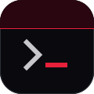
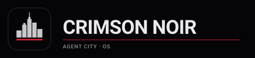

Crimson Noir · design tokens
Vantablack, anodized titanium, one crimson line.
Palette
black #000000
ink #050507
ink-2 #0a0a0e
ink-3 #121216
titanium-100 #e7e9ec
titanium-200 #c8c8cc
titanium-400 #8c8c90
titanium-600 #5a5a60
titanium-800 #2c2e36
crimson #e8203a
crimson-deep #2a0710
crimson-rule #3a1018
crimson-tint #ffd0d6
crimson-muted #d0b0b6
amber #d89a2a
Type
Display 34/40
Title 22/28
Headline 17/22
Body 15/20. The city at night, its agents at work, the operator at the terminal.
Caption 13/18
Label 11/14 · 0.08em
mono 13/20 · lock 96c3d1d3 · tick 3576
Marks


Structure
Alive
4,096Crimson Terminaltick 3576 alive 4096 RUNNING lock 96c3d1d3
CRIMSON NOIR OS 0.9.0 (generation 0): the self-test passed.
> golden
MATCH
> tick
tick 3577
> fly
? no such word: fly
> _